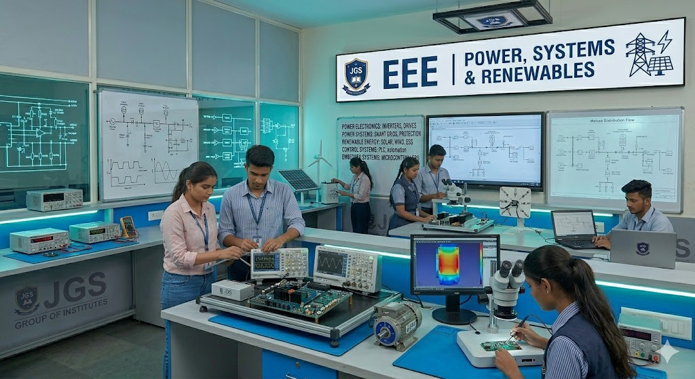

Class 11
Bridge courses, subject foundations, study discipline and activity-based academic planning.
ApplyJGS Intermediate prepares students for board success, entrance pathways, communication skills and the transition into degree programs.

Bridge courses, subject foundations, study discipline and activity-based academic planning.
ApplyBoard preparation, practicals, revision tests, counseling and admission guidance.
ApplyEngineering, management, science, commerce and career pathway counseling.
View DegreeWeekly teaching plans, revision schedules, practical records and test calendars.
Attendance, marks, notices and meeting updates are visible through the parent portal.
Students receive guidance on branch selection, entrance exams, degree pathways and skill development.
Library, labs, events, mentor meetings and student services are available within the JGS campus.
Designed for engineering, medical, data, research and technology pathways.
Builds fundamentals for management, accounting, finance, entrepreneurship and business studies.
Starts with foundation chapters, study discipline, weekly tests and practical introduction.
Focuses on board readiness, revision, pre-board exams and future admission counseling.
Students are evaluated through unit tests, term exams, assignments, practicals and attendance.
Guidance connects Intermediate subjects to B.Tech, BBA/MBA, science, commerce and professional tracks.